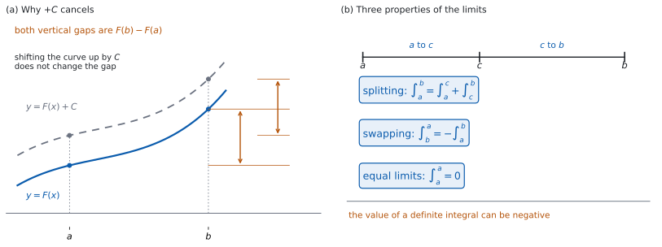

SL 5.11a — Definite integrals（定積分）
- definite integral（定積分）と不定積分のちがいを説明できる。
- \(\displaystyle\int_{a}^{b} g'(x)\,dx = g(b) - g(a)\) を使って、値を手で求められる。
- 角かっこ \(\bigl[F(x)\bigr]_{a}^{b}\) の書き方で答案を書ける。
- \(+C\) が要らない理由を説明できる。
- 上端と下端を入れかえたときの符号、区間を分ける書き方を使える。
- 置換したときに、上端・下端も \(u\) に直せる。
- 定積分の値が負にもなることを知っている。
The idea
1. 定積分とは
上と下に数が付いた積分です。 答えは関数ではなく、\(1\) つの数になります。
| 不定積分 | 定積分 | |
|---|---|---|
| 書き方 | \(\displaystyle\int f(x)\,dx\) | \(\displaystyle\int_{a}^{b} f(x)\,dx\) |
| 答え | 関数（\(+C\) が付く） | \(1\) つの数 |
| \(+C\) | 要る | 要らない |
\(a\) を lower limit（下端）、\(b\) を upper limit（上端）といいます。
\(x\) は答えに残りません。 代入して消えてしまうので、\(\displaystyle\int_{a}^{b} f(t)\,dt\) と書いても同じ数です。
2. \(g(b) - g(a)\) で出す
\[ \int_{a}^{b} g'(x)\,dx = g(b) - g(a) \tag{1}\]
導関数を \(a\) から \(b\) まで積分すると、もとの関数の差になります。 これが定積分を手で求める方法です。
この式が使えるのは、\(a \leq x \leq b\) の全体で被積分関数が定義され、値が途切れていないときだけです。 区間の中に定義されない点があるときは、角かっこをそのまま当てられません。たとえば \(\displaystyle\int_{-1}^{1} \frac{1}{x^{2}}\,dx\) に角かっこを当てると \(\left[-\dfrac{1}{x}\right]_{-1}^{1} = -1 - 1 = -2\) となり、\(\dfrac{1}{x^{2}} > 0\) なのに負の値が出てしまいます。\(x = 0\) が区間の中にあるからです。上端と下端を見たら、その間で被積分関数が定義されているかを、いつも確かめてください。
式 1 は公式集にありません。 公式集の 5.11 の欄にあるのは面積の式だけで、それは SL 5.11b で使います。
微分してもどす、と読んでください。 \(g\) を微分すると \(g'\) になります。その \(g'\) を \(a\) から \(b\) まで積分しても、\(g\) そのものが出てくるわけではありません（定数のちがいが分からないからです）。出てくるのは、両端での値の差 \(g(b) - g(a)\) です。
3. 角かっこで書く
答案では、原始関数を角かっこに入れて書きます。 \(F' = f\) とすると、次のようになります。
\[ \int_{a}^{b} f(x)\,dx = \bigl[F(x)\bigr]_{a}^{b} = F(b) - F(a) \tag{2}\]
引く順番は「上端 \(-\) 下端」です。 \(F(a) - F(b)\) と書くと符号が逆になります。
\(+C\) は書きません。 書いても引き算で消えるからです（図 1 (a)）。
4. 手順
まず式を書いてから、値を出してください。 途中の式がないと、何をしたのかが読み手に伝わりません。
\(F(a)\) が負のときは、かっこを付けてください。 \(F(b) - (-3)\) は \(F(b) + 3\) です。
5. 上端・下端の性質
| 性質 | 式 |
|---|---|
| 入れかえると符号が変わる | \(\displaystyle\int_{b}^{a} f(x)\,dx = -\int_{a}^{b} f(x)\,dx\) |
| 区間を分けられる | \(\displaystyle\int_{a}^{b} f(x)\,dx = \int_{a}^{c} f(x)\,dx + \int_{c}^{b} f(x)\,dx\) |
| 上下が同じなら \(0\) | \(\displaystyle\int_{a}^{a} f(x)\,dx = 0\) |
どの性質も、\(a\) と \(b\)（と \(c\)）をふくむ区間全体で被積分関数が定義されているときの話です（第 2 節）。
\[ \int_{b}^{a} f(x)\,dx = -\int_{a}^{b} f(x)\,dx \tag{3}\]
\[ \int_{a}^{b} f(x)\,dx = \int_{a}^{c} f(x)\,dx + \int_{c}^{b} f(x)\,dx \tag{4}\]
どれも 式 2 から出ます（図 1 (b)）。\(F(a) - F(b) = -\bigl(F(b) - F(a)\bigr)\)、\(F(a) - F(a) = 0\) です。
定数倍と和は、不定積分と同じです（SL 5.5）。\(\displaystyle\int_{a}^{b}\bigl(f(x) + g(x)\bigr)dx = \int_{a}^{b} f(x)\,dx + \int_{a}^{b} g(x)\,dx\)、\(\displaystyle\int_{a}^{b} kf(x)\,dx = k\int_{a}^{b} f(x)\,dx\) です。
6. 置換したら、上端・下端も変える
\(u\) に置きかえたら、上端と下端も \(u\) の値に直します（SL 5.10b）。
\[ \int_{a}^{b} k\,g'(x)\,f(g(x))\,dx = k\int_{g(a)}^{g(b)} f(u)\,du \tag{5}\]
そうすれば、\(x\) にもどす必要がありません。 \(u\) のまま代入して終われます。
直さないと、まちがいます。 上下の数はもともと \(x\) の値なので、\(u\) の式にそのまま入れることはできません。
\(x\) にもどしてから代入してもかまいません。 そのときは、上端・下端はもとの \(a\)、\(b\) のままです。どちらか一方に決めて、混ぜないでください。
7. 値と面積はちがう
定積分の値は、負にもなります。 \(F(b)\) が \(F(a)\) より小さければ、\(F(b) - F(a)\) は負です（図 1 (b) の下の注記）。被積分関数が負になる範囲があると、そうなることがあります。
面積として読むのは、別の話です。 符号のある面積と、\(2\) 曲線ではさまれた面積は SL 5.11b で扱います。
値が手では出せない定積分もあります。 そのときは電卓で求めます（SL 5.5）。このページの問題は、すべて手で出せる形です。
定積分の値は、電卓の積分の機能で直接出せます（SL 5.5）。手で出した値と見くらべてください。
それでも、答案には角かっこの行が要ります。 電卓は確かめに使ってください。

Why it works
なぜ、\(+C\) を書かなくてよいのでしょうか。 引き算で消えるからです。
原始関数を \(F(x) + C\) としても、代入して引くと次のようになります。
\[ \bigl(F(b) + C\bigr) - \bigl(F(a) + C\bigr) = F(b) - F(a) \]
\(C\) がどんな値でも、答えは同じです（図 1 (a)）。だから定積分では \(C\) を書きません。
なぜ、上下を入れかえると符号が変わるのでしょうか。 引く順番が入れかわるからです。
\(\displaystyle\int_{b}^{a} f(x)\,dx = F(a) - F(b)\) で、これは \(F(b) - F(a)\) の \(-1\) 倍です。新しい規則ではなく、引き算の性質です。
なぜ、区間を分けられるのでしょうか。 途中の値が打ち消し合うからです。
\[ \bigl(F(c) - F(a)\bigr) + \bigl(F(b) - F(c)\bigr) = F(b) - F(a) \]
\(F(c)\) が消えました。 どこで分けても、両端だけが残ります。
なぜ、置換したら上端・下端も変えるのでしょうか。 数の意味が変わるからです。
\(\displaystyle\int_{a}^{b}\) の \(a\) と \(b\) は \(x\) の値です。積分を \(u\) で書き直したら、そこに入る数も \(u\) の値、つまり \(g(a)\) と \(g(b)\) でなければなりません。同じ記号でも、指しているものがちがいます。
Worked examples
問題文は英語です。意味が理解できなかったら、問題文の下の「日本語訳」を開いてください。解説は日本語です。
どれも電卓なしで解ける形です。
例題 1 Find the value of \(\displaystyle\int_{1}^{3} \left(3x^{2} - 4x + 1\right)dx\).
日本語訳
\(\displaystyle\int_{1}^{3} \left(3x^{2} - 4x + 1\right)dx\) の値を求めなさい。
まず原始関数を書きます（SL 5.5）。
\[ \int_{1}^{3} \left(3x^{2} - 4x + 1\right)dx = \Bigl[x^{3} - 2x^{2} + x\Bigr]_{1}^{3} \]
上端と下端を代入します。
\[ F(3) = 27 - 18 + 3 = 12, \qquad F(1) = 1 - 2 + 1 = 0 \]
\[ \int_{1}^{3} \left(3x^{2} - 4x + 1\right)dx = 12 - 0 = 12 \]
検算（微分して）。 \(\dfrac{d}{dx}\left(x^{3} - 2x^{2} + x\right) = 3x^{2} - 4x + 1\) ✓ 原始関数が合っています。
検算（\(+C\) を入れても）。 \(\bigl(12 + C\bigr) - \bigl(0 + C\bigr) = 12\) ✓ \(C\) は消えます。
検算（分けても同じ）。 \(F(2) = 8 - 8 + 2 = 2\) です。\(x = 2\) で分けると \((2 - 0) + (12 - 2) = 12\) ✓ 式 4 と合っています。
検算（おおよその大きさ）。 \(1 \leq x \leq 3\) で \(3x^{2} - 4x + 1\) は \(0\) から \(16\) の間の値をとり、区間の幅は \(2\) です。だから値は \(0 \times 2 = 0\) 以上 \(16 \times 2 = 32\) 以下になります ✓ 答えの \(12\) は、この間にあります。
\[\int_{1}^{3} \left(3x^{2} - 4x + 1\right)dx = \Bigl[x^{3} - 2x^{2} + x\Bigr]_{1}^{3}\] \[= (27 - 18 + 3) - (1 - 2 + 1)\] \[= 12\]
例題 2 Find the value of each of the following.
(a) \(\displaystyle\int_{0}^{\frac{\pi}{2}} \cos x\,dx\)
(b) \(\displaystyle\int_{1}^{e} \frac{1}{x}\,dx\)
日本語訳
次のそれぞれの値を求めなさい。
(a) \(\displaystyle\int_{0}^{\frac{\pi}{2}} \cos x\,dx\)
(b) \(\displaystyle\int_{1}^{e} \frac{1}{x}\,dx\)
(a) \(\cos\) の原始関数は \(\sin\) です（SL 5.10a）。
\[ \int_{0}^{\frac{\pi}{2}} \cos x\,dx = \Bigl[\sin x\Bigr]_{0}^{\frac{\pi}{2}} = 1 - 0 = 1 \]
(b) \(\dfrac{1}{x}\) の原始関数は \(\ln\lvert x\rvert\) です。区間が \(1 \leq x \leq e\) なので、\(x > 0\) です。
\[ \int_{1}^{e} \frac{1}{x}\,dx = \Bigl[\ln x\Bigr]_{1}^{e} = 1 - 0 = 1 \]
検算（(a) の角度）。 \(\sin\dfrac{\pi}{2} = 1\)、\(\sin 0 = 0\) ✓ radian（ラジアン）で計算しています（SL 5.6a）。
検算（(b) の値）。 \(\ln e = 1\)、\(\ln 1 = 0\) ✓
検算（(b) の絶対値）。 区間の中で \(x > 0\) なので、\(\ln x\) と書けます ✓（SL 5.10a）。
検算（符号）。 どちらも区間の中で被積分関数が正なので、値も正です ✓
(a) \[\int_{0}^{\frac{\pi}{2}} \cos x\,dx = \Bigl[\sin x\Bigr]_{0}^{\frac{\pi}{2}}\] \[= \sin\frac{\pi}{2} - \sin 0 = 1 - 0 = 1\]
(b) \[\int_{1}^{e} \frac{1}{x}\,dx = \Bigl[\ln x\Bigr]_{1}^{e}\] \[= \ln e - \ln 1 = 1 - 0 = 1\]
例題 3 Find the value of \(\displaystyle\int_{0}^{2} 2x\left(x^{2} + 1\right)^{3}dx\).
日本語訳
\(\displaystyle\int_{0}^{2} 2x\left(x^{2} + 1\right)^{3}dx\) の値を求めなさい。
中身の導関数がかかっています（SL 5.10b）。\(u = x^{2} + 1\) と置きます。
\[ u = x^{2} + 1, \qquad du = 2x\,dx \]
上端と下端も \(u\) に直します（第 6 節）。\(x = 0\) のとき \(u = 1\)、\(x = 2\) のとき \(u = 5\) です。
\[ \int_{0}^{2} 2x\left(x^{2} + 1\right)^{3}dx = \int_{1}^{5} u^{3}\,du = \left[\frac{u^{4}}{4}\right]_{1}^{5} \]
\[ = \frac{625}{4} - \frac{1}{4} = \frac{624}{4} = 156 \]
検算（上端・下端を直したか）。 \(u\) の区間は \(1\) から \(5\) です ✓ \(0\) から \(2\) のままにすると \(4\) になり、まちがいます。
検算（\(x\) にもどしても）。 \(\left[\dfrac{\left(x^{2}+1\right)^{4}}{4}\right]_{0}^{2} = \dfrac{625}{4} - \dfrac{1}{4} = 156\) ✓ 同じ値です。
検算（\(5^{4}\)）。 \(5^{4} = 625\) ✓
検算（符号）。 \(0 \leq x \leq 2\) で被積分関数は \(0\) 以上なので、値は正です ✓
\[u = x^{2} + 1, \quad du = 2x\,dx\] \[x = 0 \Rightarrow u = 1, \qquad x = 2 \Rightarrow u = 5\] \[\int_{0}^{2} 2x\left(x^{2} + 1\right)^{3}dx = \int_{1}^{5} u^{3}\,du = \left[\frac{u^{4}}{4}\right]_{1}^{5} = 156\]
例題 4 It is given that \(\displaystyle\int_{1}^{4} f(x)\,dx = 7\) and \(\displaystyle\int_{1}^{2} f(x)\,dx = 3\).
(a) Find \(\displaystyle\int_{2}^{4} f(x)\,dx\).
(b) Find \(\displaystyle\int_{4}^{1} f(x)\,dx\).
(c) Find \(\displaystyle\int_{1}^{4} 3f(x)\,dx\).
(d) Explain why the answer to part (a) can be found without knowing \(f(x)\).
日本語訳
\(\displaystyle\int_{1}^{4} f(x)\,dx = 7\)、\(\displaystyle\int_{1}^{2} f(x)\,dx = 3\) とします。
(a) \(\displaystyle\int_{2}^{4} f(x)\,dx\) を求めなさい。
(b) \(\displaystyle\int_{4}^{1} f(x)\,dx\) を求めなさい。
(c) \(\displaystyle\int_{1}^{4} 3f(x)\,dx\) を求めなさい。
(d) (a) の答えが、\(f(x)\) を知らなくても求められる理由を説明しなさい。
(a) 区間を \(x = 2\) で分けます（式 4）。
\[ \int_{1}^{4} f(x)\,dx = \int_{1}^{2} f(x)\,dx + \int_{2}^{4} f(x)\,dx \]
\[ 7 = 3 + \int_{2}^{4} f(x)\,dx \quad \Rightarrow \quad \int_{2}^{4} f(x)\,dx = 4 \]
(b) 上端と下端が入れかわっています（式 3）。
\[ \int_{4}^{1} f(x)\,dx = -7 \]
(c) 定数倍は外に出せます（第 5 節）。
\[ \int_{1}^{4} 3f(x)\,dx = 3 \times 7 = 21 \]
(d) 分ける性質は、\(F(c)\) が打ち消し合うことから出るものです。だから \(F\) が何であっても、したがって \(f\) が何であっても成り立ちます。 使ったのは、与えられた \(2\) つの値だけです。
検算（足しもどして）。 \(3 + 4 = 7\) ✓ (a) の答えを足すと、もとの値にもどります。
検算（当てはまる \(f\) を \(1\) つ作って）。 \(f(x) = -\dfrac{2}{3}x + 4\) は \(\displaystyle\int_{1}^{4} f(x)\,dx = 7\) と \(\displaystyle\int_{1}^{2} f(x)\,dx = 3\) の両方を満たします。この \(f\) で直接計算すると \(\displaystyle\int_{2}^{4} f(x)\,dx = 4\)、\(\displaystyle\int_{4}^{1} f(x)\,dx = -7\)、\(\displaystyle\int_{1}^{4} 3f(x)\,dx = 21\) ✓ (a)(b)(c) の答えと合います。
検算（\(f\) が \(1\) つに決まらないこと）。 条件を満たす \(f\) はほかにもあります ✓ それでも (a)(b)(c) の答えは同じです。
試験ではこう書く
Splitting a definite integral at an interior point follows from the fact that the integral equals \(F(b) - F(a)\) for any antiderivative \(F\). Splitting at \(x = 2\) gives \((F(2) - F(1)) + (F(4) - F(2)) = F(4) - F(1)\), since \(F(2)\) cancels. So the three integrals are related by \(\int_{1}^{4} f(x)\,dx = \int_{1}^{2} f(x)\,dx + \int_{2}^{4} f(x)\,dx\) whatever the function \(f\) is, and the two given values determine the third.
(a) \[7 = 3 + \int_{2}^{4} f(x)\,dx \quad \Rightarrow \quad \int_{2}^{4} f(x)\,dx = 4\]
(b) \[\int_{4}^{1} f(x)\,dx = -7\]
(c) \[\int_{1}^{4} 3f(x)\,dx = 21\]
(d) the splitting rule follows from \(F(b) - F(a)\), so it holds for every \(f\)
Common errors
引き算で消えます（第 3 節）。角かっこの中に \(C\) は書きません。
「上端 \(-\) 下端」です（第 3 節）。逆にすると符号が変わります。
\(u\) の値に直します（第 6 節）。直さないなら、\(x\) にもどしてから代入します。
\(F(b) - (-3)\) は \(F(b) + 3\) です（第 4 節）。符号を落としやすいところです。
\(\displaystyle\int_{-1}^{1}\frac{1}{x^{2}}\,dx\) のように、\(a\) と \(b\) の間に被積分関数が定義されない点があるときは、この計算はできません（第 2 節）。上端と下端を見たら、その間を確かめてください。
Exercises
各問題に、折りたたみが \(3\) つ付いています。日本語訳、解答例（答案用紙に書くべきこと。英語です。英語の答案例が付くものもあります）、解説（なぜそうなるか。日本語です）。
まず自分で解いて、次に解答例と見くらべてください。解説は、合わなかったときだけ開けば十分です。
1 Find the value of \(\displaystyle\int_{0}^{2} \left(x^{2} + 1\right)dx\).
日本語訳
\(\displaystyle\int_{0}^{2} \left(x^{2} + 1\right)dx\) の値を求めなさい。
\[\int_{0}^{2} \left(x^{2} + 1\right)dx = \left[\frac{x^{3}}{3} + x\right]_{0}^{2}\]
\[= \left(\frac{8}{3} + 2\right) - 0 = \frac{14}{3}\]
原始関数を書いて、代入して引きます（表 2）。
検算（微分して）。 \(\dfrac{d}{dx}\left(\dfrac{x^{3}}{3} + x\right) = x^{2} + 1\) ✓
検算（下端の値）。 \(F(0) = 0\) です ✓ 値が \(0\) でも、\(F(2) - F(0)\) という引き算の行は省かずに書きます。
検算（大きさ）。 \(0 \leq x \leq 2\) で被積分関数は \(1\) から \(5\) の間なので、値は \(2\) から \(10\) の間です ✓ \(\dfrac{14}{3}\) はおよそ \(4.67\) です。
2 Find the value of \(\displaystyle\int_{1}^{2} \frac{4}{x^{2}}\,dx\).
日本語訳
\(\displaystyle\int_{1}^{2} \frac{4}{x^{2}}\,dx\) の値を求めなさい。
\[\int_{1}^{2} \frac{4}{x^{2}}\,dx = \int_{1}^{2} 4x^{-2}\,dx = \left[-\frac{4}{x}\right]_{1}^{2}\]
\[= (-2) - (-4) = 2\]
まず \(4x^{-2}\) と書き直します（SL 5.10a）。
検算（微分して）。 \(\dfrac{d}{dx}\left(-4x^{-1}\right) = 4x^{-2}\) ✓
検算（かっこ）。 下端の値が \(-4\) なので、引くと \(+4\) になります ✓ かっこを付けないと符号をまちがえます。
検算（区間に \(0\) がない）。 \(1 \leq x \leq 2\) に \(x = 0\) は入っていません ✓ \(x = 0\) をふくむ区間だと \(-\dfrac{4}{x}\) が定義されない点ができるので、角かっこをそのまま当てることはできません（第 2 節）。
3 Find the value of \(\displaystyle\int_{\pi}^{\frac{3\pi}{2}} \sin x\,dx\).
日本語訳
\(\displaystyle\int_{\pi}^{\frac{3\pi}{2}} \sin x\,dx\) の値を求めなさい。
\[\int_{\pi}^{\frac{3\pi}{2}} \sin x\,dx = \Bigl[-\cos x\Bigr]_{\pi}^{\frac{3\pi}{2}}\]
\[= -\cos\frac{3\pi}{2} - \left(-\cos\pi\right) = 0 - 1 = -1\]
\(\sin\) の原始関数は \(-\cos\) です（SL 5.10a）。
検算（微分して）。 \(\dfrac{d}{dx}(-\cos x) = \sin x\) ✓
検算（正確な値）。 \(\cos\dfrac{3\pi}{2} = 0\)、\(\cos\pi = -1\) ✓ radian（ラジアン）です。
検算（符号）。 \(\pi \leq x \leq \dfrac{3\pi}{2}\) で \(\sin x \leq 0\) なので、値が負になるのは正しいことです ✓ 負の値が出ても、計算まちがいとはかぎりません（第 7 節）。
検算（大きさ）。 区間の幅は \(\dfrac{\pi}{2}\)、およそ \(1.57\) です。\(\sin x\) は \(0\) から \(-1\) の間なので、値は \(-1.57\) 以上 \(0\) 以下です ✓ 答えの \(-1\) は、この間にあります。
4 Find the value of \(\displaystyle\int_{0}^{1} e^{2x}\,dx\), giving your answer in terms of \(e\).
日本語訳
\(\displaystyle\int_{0}^{1} e^{2x}\,dx\) の値を、\(e\) を使った式で求めなさい。
\[\int_{0}^{1} e^{2x}\,dx = \left[\frac{1}{2}e^{2x}\right]_{0}^{1}\]
\[= \frac{1}{2}e^{2} - \frac{1}{2} = \frac{e^{2} - 1}{2}\]
中身が \(2x\) なので、\(\dfrac{1}{2}\) をかけます（SL 5.10a）。
検算（微分して）。 \(\dfrac{d}{dx}\left(\dfrac{1}{2}e^{2x}\right) = e^{2x}\) ✓
検算（\(e^{0}\)）。 \(e^{0} = 1\) なので、下端は \(\dfrac{1}{2}\) です ✓
検算（大きさ）。 \(e^{2}\) はおよそ \(7.39\) なので、答えはおよそ \(3.19\) です ✓ 区間の幅が \(1\)、被積分関数が \(1\) から \(7.39\) なので、その間におさまっています。
5 Find the value of \(\displaystyle\int_{1}^{4} \frac{x^{2} + 1}{\sqrt{x}}\,dx\).
日本語訳
\(\displaystyle\int_{1}^{4} \frac{x^{2} + 1}{\sqrt{x}}\,dx\) の値を求めなさい。
\[\frac{x^{2} + 1}{\sqrt{x}} = x^{\frac{3}{2}} + x^{-\frac{1}{2}}\]
\[\int_{1}^{4} \left(x^{\frac{3}{2}} + x^{-\frac{1}{2}}\right)dx = \left[\frac{2}{5}x^{\frac{5}{2}} + 2x^{\frac{1}{2}}\right]_{1}^{4}\]
\[= \left(\frac{64}{5} + 4\right) - \left(\frac{2}{5} + 2\right) = \frac{72}{5}\]
先に指数の形へ直してから積分します（SL 5.10a）。
検算（書き直し）。 \(\dfrac{x^{2}}{\sqrt{x}} = x^{2 - \frac{1}{2}} = x^{\frac{3}{2}}\)、\(\dfrac{1}{\sqrt{x}} = x^{-\frac{1}{2}}\) ✓
検算（微分して）。 \(\dfrac{d}{dx}\left(\dfrac{2}{5}x^{\frac{5}{2}} + 2x^{\frac{1}{2}}\right) = x^{\frac{3}{2}} + x^{-\frac{1}{2}}\) ✓
検算（\(4^{\frac{5}{2}}\)）。 \(4^{\frac{5}{2}} = \left(\sqrt{4}\right)^{5} = 32\) なので、\(\dfrac{2}{5} \times 32 = \dfrac{64}{5}\) ✓
検算（区間に \(0\) がない）。 \(1 \leq x \leq 4\) なので \(\sqrt{x}\) が使えます ✓（第 2 節）。
6 Find the value of \(\displaystyle\int_{0}^{1} 3x^{2}\left(x^{3} + 1\right)^{2}dx\), using the substitution \(u = x^{3} + 1\).
日本語訳
置きかえ \(u = x^{3} + 1\) を使って、\(\displaystyle\int_{0}^{1} 3x^{2}\left(x^{3} + 1\right)^{2}dx\) の値を求めなさい。
\[u = x^{3} + 1, \quad du = 3x^{2}\,dx\]
\[x = 0 \Rightarrow u = 1, \qquad x = 1 \Rightarrow u = 2\]
\[\int_{0}^{1} 3x^{2}\left(x^{3} + 1\right)^{2}dx = \int_{1}^{2} u^{2}\,du = \left[\frac{u^{3}}{3}\right]_{1}^{2} = \frac{7}{3}\]
上端・下端も \(u\) に直します（第 6 節）。
検算（\(u\) の区間）。 \(x = 0\) で \(u = 1\)、\(x = 1\) で \(u = 2\) ✓ \(0\) から \(1\) ではありません。
検算（値）。 \(\dfrac{8}{3} - \dfrac{1}{3} = \dfrac{7}{3}\) ✓
検算（\(x\) にもどしても）。 \(\left[\dfrac{\left(x^{3}+1\right)^{3}}{3}\right]_{0}^{1} = \dfrac{8}{3} - \dfrac{1}{3} = \dfrac{7}{3}\) ✓ 同じ値です。
7 It is given that \(\displaystyle\int_{0}^{5} f(x)\,dx = 12\) and \(\displaystyle\int_{0}^{3} f(x)\,dx = 5\). Find \(\displaystyle\int_{3}^{5} f(x)\,dx\), \(\displaystyle\int_{5}^{0} f(x)\,dx\) and \(\displaystyle\int_{3}^{3} f(x)\,dx\).
日本語訳
\(\displaystyle\int_{0}^{5} f(x)\,dx = 12\)、\(\displaystyle\int_{0}^{3} f(x)\,dx = 5\) とします。\(\displaystyle\int_{3}^{5} f(x)\,dx\)、\(\displaystyle\int_{5}^{0} f(x)\,dx\)、\(\displaystyle\int_{3}^{3} f(x)\,dx\) を求めなさい。
\[12 = 5 + \int_{3}^{5} f(x)\,dx \quad \Rightarrow \quad \int_{3}^{5} f(x)\,dx = 7\]
\[\int_{5}^{0} f(x)\,dx = -12\]
\[\int_{3}^{3} f(x)\,dx = 0\]
区間を \(x = 3\) で分け、\(2\) つめは上下を入れかえます（第 5 節）。
検算（足しもどして）。 \(5 + 7 = 12\) ✓
検算（別の道で）。 \(\displaystyle\int_{5}^{0} f(x)\,dx = \int_{5}^{3} f(x)\,dx + \int_{3}^{0} f(x)\,dx = -7 + (-5) = -12\) ✓ \(-\displaystyle\int_{0}^{5} f(x)\,dx\) と一致します。
検算（上下が同じ）。 \(\displaystyle\int_{3}^{3} f(x)\,dx\) は \(F(3) - F(3)\) なので \(0\) です ✓ \(f\) が何であっても \(0\) です。
8 Find the value of \(\displaystyle\int_{-1}^{2} \left(3x^{2} - 2x\right)dx\).
日本語訳
\(\displaystyle\int_{-1}^{2} \left(3x^{2} - 2x\right)dx\) の値を求めなさい。
\[\int_{-1}^{2} \left(3x^{2} - 2x\right)dx = \Bigl[x^{3} - x^{2}\Bigr]_{-1}^{2}\]
\[= (8 - 4) - \left((-1) - 1\right) = 4 - (-2) = 6\]
下端が負なので、代入するときにかっこを付けます（第 4 節）。
検算（微分して）。 \(\dfrac{d}{dx}\left(x^{3} - x^{2}\right) = 3x^{2} - 2x\) ✓
検算（下端の値）。 \((-1)^{3} - (-1)^{2} = -1 - 1 = -2\) ✓ \(-1 + 1 = 0\) ではありません。
検算（引き算）。 \(4 - (-2) = 6\) ✓ かっこを落とすと \(4 - 2 = 2\) になってしまいます。
9 A student calculates \(\displaystyle\int_{1}^{2} 2x\left(x^{2} - 1\right)^{2}dx\) by putting \(u = x^{2} - 1\), and writes \(\displaystyle\int_{1}^{2} u^{2}\,du = \frac{2^{3}}{3} - \frac{1^{3}}{3} = \frac{7}{3}\). Identify the error and give the correct value.
日本語訳
ある生徒が \(u = x^{2} - 1\) と置いて \(\displaystyle\int_{1}^{2} 2x\left(x^{2} - 1\right)^{2}dx\) を計算し、\(\displaystyle\int_{1}^{2} u^{2}\,du = \frac{2^{3}}{3} - \frac{1^{3}}{3} = \frac{7}{3}\) と書きました。誤りを指摘し、正しい値を書きなさい。
the limits \(1\) and \(2\) are values of \(x\), not of \(u\); they must be changed to \(u = 0\) and \(u = 3\)
\[\int_{0}^{3} u^{2}\,du = \left[\frac{u^{3}}{3}\right]_{0}^{3} = 9\]
置きかえたら、上端・下端も \(u\) の値に直します（第 6 節）。
検算（\(u\) の値）。 \(x = 1\) で \(u = 0\)、\(x = 2\) で \(u = 3\) ✓
検算（\(x\) にもどして）。 \(\left[\dfrac{\left(x^{2}-1\right)^{3}}{3}\right]_{1}^{2} = \dfrac{27}{3} - 0 = 9\) ✓ 正しい値と合います。
検算（生徒の値が小さすぎる）。 被積分関数は \(1 \leq x \leq 2\) で \(0\) から \(36\) まで大きくなります ✓ 区間の幅が \(1\) なので、\(\dfrac{7}{3}\) という値は小さすぎます。
試験ではこう書く
After the substitution \(u = x^{2} - 1\), the integral is written in terms of \(u\), so the limits must also be values of \(u\). The numbers \(1\) and \(2\) are values of \(x\): when \(x = 1\), \(u = 0\), and when \(x = 2\), \(u = 3\). The student kept the \(x\) limits, so the wrong interval was used. The correct calculation is \(\int_{0}^{3} u^{2}\,du = \left[\frac{u^{3}}{3}\right]_{0}^{3} = 9\).
10 A student writes \(\displaystyle\int_{1}^{3} 2x\,dx = x^{2} + C\). Identify what is wrong with this answer, and give the correct value.
日本語訳
ある生徒が \(\displaystyle\int_{1}^{3} 2x\,dx = x^{2} + C\) と書きました。この答えの何がおかしいかを指摘し、正しい値を書きなさい。
a definite integral is a number, so the answer must not contain \(x\) or \(C\)
\[\int_{1}^{3} 2x\,dx = \Bigl[x^{2}\Bigr]_{1}^{3} = 9 - 1 = 8\]
生徒が書いたのは不定積分の答えです（表 1）。定積分では、そのあと上端と下端を代入して引きます（第 3 節）。
検算（\(C\) を入れて計算して）。 \(\left(9 + C\right) - \left(1 + C\right) = 8\) ✓ \(C\) は消えます。
検算（微分して）。 \(\dfrac{d}{dx}x^{2} = 2x\) ✓ 原始関数そのものは合っています。
検算（大きさ）。 \(1 \leq x \leq 3\) で \(2x\) は \(2\) から \(6\)、区間の幅は \(2\) なので、値は \(4\) 以上 \(12\) 以下です ✓ 答えの \(8\) は、この間にあります。
試験ではこう書く
A definite integral has a numerical value, so the answer cannot contain the variable \(x\), and it cannot contain an arbitrary constant \(C\). The student stopped at the antiderivative, which is the answer to the indefinite integral. To finish, the upper and lower limits must be substituted and subtracted: \(\int_{1}^{3} 2x\,dx = \left[x^{2}\right]_{1}^{3} = 9 - 1 = 8\). Any constant \(C\) would cancel in this subtraction.